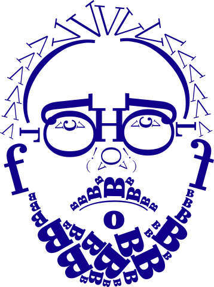

CSTM Fonts

Type.Today
Made in 2015 by CSTM Fonts
CSTM Fonts
Type.Today
Made in 2015 by CSTM Fonts
Культурный опыт,
закодированный
под современность
Юрий Остроменский, дизайнер
«Идея шрифта Kazimir впервые пришла мне в голову, когда на меня упала дореволюционная книга Петра Николаевича Полевого „История русской словесности с древнейших времён до наших дней“ издательства А.Ф. Маркса из семейной библиотеки моей жены Даши».
«От шрифта из книги Полевого мы взяли главные отношения — контрастность, тон набора, ритм, интонацию».
Ю
О
Илья Рудерман, дизайнер
«Появление Kazimir совпало с появлением студии CSTM Fonts, поэтому он стал нашим первым шрифтом, созданным специально на продажу».
И
Р
Light
Light Italic
Regular
Regular Italic
Medium
Medium Italic
Bold
Bold Italic
Black
Black Italic
5
начертаний
26
языков
Английский, Африканский, Белорусский, Болгарский, Венгерский, Галисийский, Голландский, Датский, Ирландский, Испанский, Итальянский, Латышский, Литовский, Норвежский, Польский, Португальский, Русский, Сербский, Словенский, Узбекский (лат), Украинский, Финский, Французский, Чешский, Шведский, Эстонский
Графические особенности шрифта
засечка
концевой элемент
концевой элемент
петля
концевой элемент
хвост
Пропорциональный шрифт
Высокий контраст
Закрытая апертура

Антиква
Х*1,35 px
Х*1,24 px
Х px
Х*1,24 px
Х*1,18 px
Х*1,01 px
Х*1,08 px
Y*1,37 px
Y px
Typography is also an art
The theater of your text


Colosseum
— the amphitheater, a monument of ancient Roman architecture, is the most famous and one of the grandest structures of the ancient world that has survived to this day.